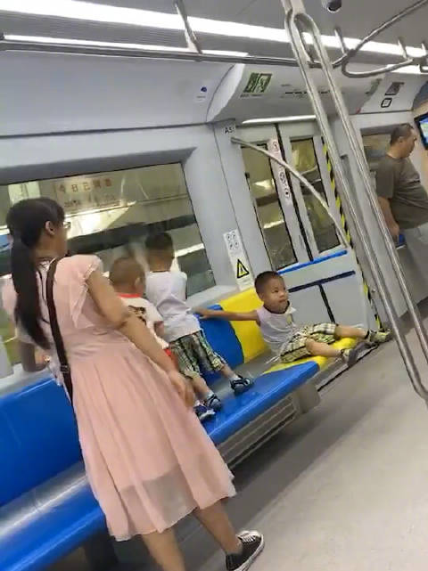
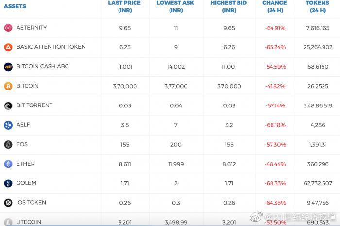
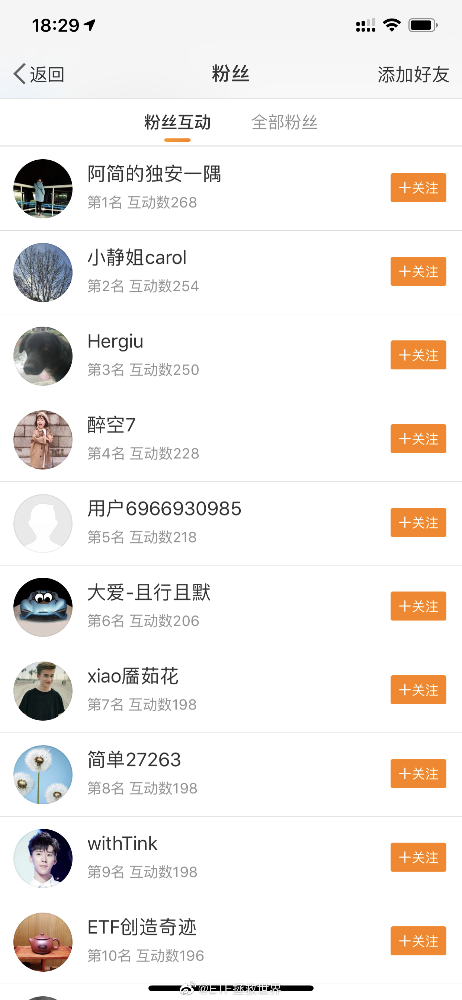
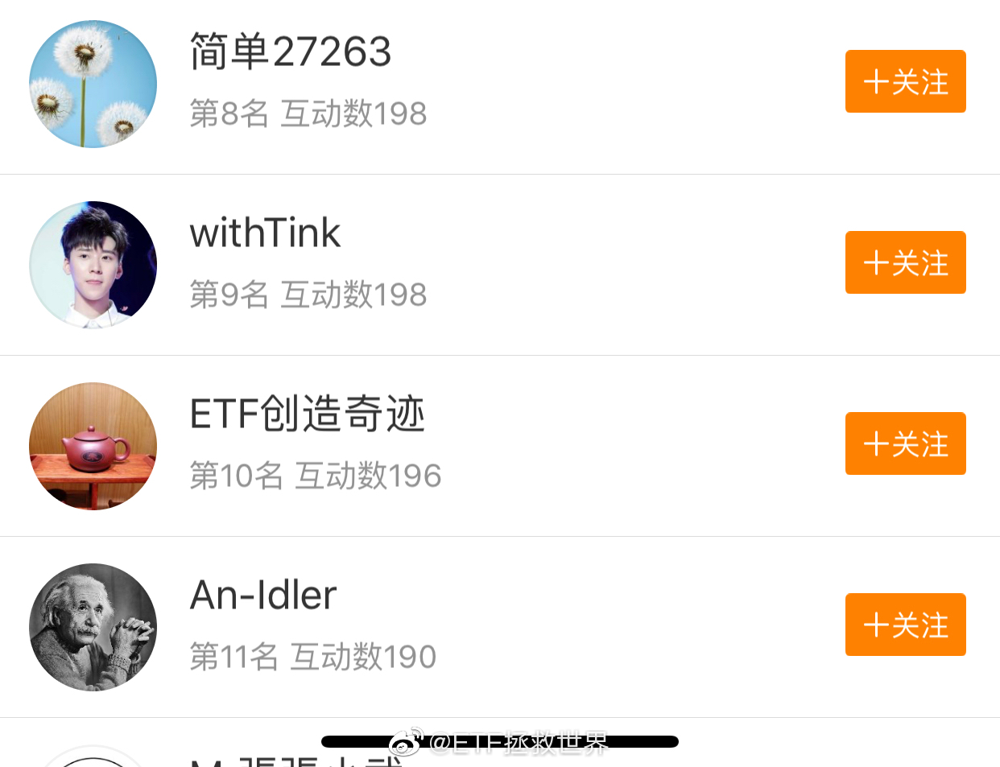
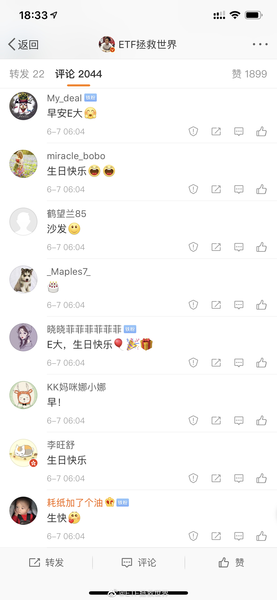
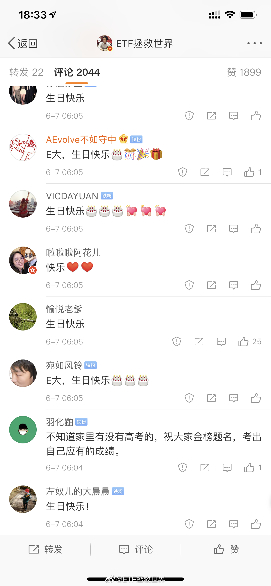
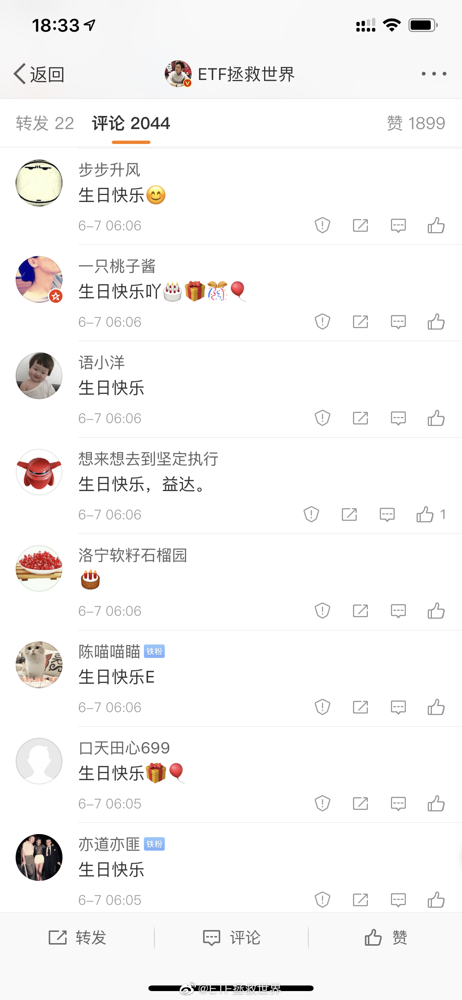

其实很多不文明现象的根源，都在于：你的心里是不是有别人。是不是会意识到自己的行为有可能给别人造成麻烦和困扰。这个“别人”，不仅是你认识的人，还有那些素昧平生的人。很多人眼中的陌生人只有两种：第一种是对自己有好处的人，第二种是多余的人。
看评论可以知道我们要进入文明社会至少还要50年。另外，那么多人在外面讨厌小孩，完全是很多熊家长造成的。@北京人不知道的北京事儿:【】网友投稿：北京地铁s1线，家长带着三个孩子，放任孩子在座椅上踩来踩去，劝了理都不理。。。遇上这样的该怎么办？ 北京人不知道的北京事儿的微博视频  69万次播放 00:05
回复@hi阿征:正规平台我赚不到钱是我自己技术不好我认了。如果我技术没问题是平台出问题导致本金损失我无法原谅自己，说明我连基本的风险意识都不够。//@hi阿征:交易安心是如此的重要@21世纪经济报道:【印度最大数字货币平台Koinex宣布终止服务，其平台比特币大跌40%】印度加密货币交易所Koinex宣布，它正在关闭业务，理由是该国缺乏银行支持和监管不确定性。其联合创始人Rahul Raj称，“在经历了数月的不确定性和混乱之后，我们遗憾地决定今天关闭所有数字资产交换服务和业务。”印度最大数字货币平台Koinex宣布终止服务 其平台比特币大跌40%！ 
我怕的就是这种。如果不会有官方交易平台出现，那么什么时候比特币能够去中心化，能够随意在玩家之间安全交易，我才会考虑。民间的交易平台就算了。@21世纪经济报道:【印度最大数字货币平台Koinex宣布终止服务，其平台比特币大跌40%】印度加密货币交易所Koinex宣布，它正在关闭业务，理由是该国缺乏银行支持和监管不确定性。其联合创始人Rahul Raj称，“在经历了数月的不确定性和混乱之后，我们遗憾地决定今天关闭所有数字资产交换服务和业务。”印度最大数字货币平台Koinex宣布终止服务 其平台比特币大跌40%！
昨天收盘是2976点，那么就是两个第七位的朋友得到礼物。分别是“xiao餍茹花”和“VICDAYUAN”两位。请两位私信我一下。@ETF拯救世界:这个月7号不是说要送礼物吗，现在差不多是时候了。送两个吧。第一个送本月互动前十名的某位朋友，前十的名单如下图。这里面小静姐因为上次拿过了，这次就把机会让给其它人吧。每次都那么靠前，真爱哈哈。所以顺延到第11位。第二个送那个帖子里回复最早的前十位铁粉其中一位，名单如图。具体是谁呢，还是明天上证收盘价。按时间顺序排列，从0-9。我觉得这样很公平，祝好运。礼物还没定，但价值达不到上次的Ps4 Pro，与上上次的Dior口红价值相当吧。